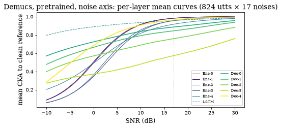
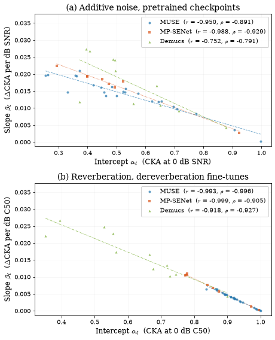
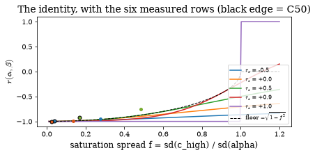

Across architectures: the tradeoff and the saturation spread#
Robustness and sensitivity are negatively correlated across the layers of MUSE. This chapter asks whether that is a property of MUSE or of the enhancement objective, by fitting the same per-layer profile to MP-SENet and Demucs on both degradation axes, and it asks how much of the correlation is forced. CKA saturates at the clean end of every sweep, and for perfectly linear curves the slope is β = (c_high − α)/s_high, so r(α, β) follows from an identity in two numbers: the correlation r_c = r(α, c_high) and the saturation spread f = sd(c_high)/sd(α) (Sec. “Saturation Spread”). Every row of Table I is rebuilt here from the shipped mean curves and fit tables with se_probe.profiles.tradeoff_summary, the tradeoff scatter of Fig. 7 is drawn from the same tables, and the last section shows what the identity permits.
Runtime: under 30 seconds on any device.
import sys
from pathlib import Path
REPO = Path.cwd().resolve()
while REPO.name != "SE-Probe" and REPO.parent != REPO:
REPO = REPO.parent
if str(REPO) not in sys.path:
sys.path.insert(0, str(REPO))
def _rel(p):
"""Repo-relative path for display (absolute only if outside the repo)."""
try:
return p.relative_to(REPO)
except ValueError:
return p
from se_probe.device import device_info, get_device
from se_probe.plotting import MODEL_COLORS, MODEL_LABELS, apply_paper_rcparams
apply_paper_rcparams()
DEVICE = get_device()
print(device_info(DEVICE))
import numpy as np
import pandas as pd
DATA_DIR = REPO / ("results_df" if (REPO / "results_df").exists() else "results_demo")
TABLES = REPO / "results_tables"
print(f"Using data from: {_rel(DATA_DIR)}")
print(f"Paper tables from: {_rel(TABLES)}")
Detected device: cpu
Using data from: results_demo
Paper tables from: results_tables
Three architectures, two axes#
MP-SENet and Demucs are structurally unlike MUSE: MP-SENet enhances magnitude and phase spectra with four alternating time and frequency transformer blocks, and Demucs is a waveform U-Net with an LSTM bottleneck. Each is probed at its natural layer set, the norm1 output of the eight time/frequency transformers for MP-SENet and the eleven block outputs (five encoder, LSTM, five decoder) for Demucs, against the 24 norm1 layers of MUSE; se_probe.layers fixes these sets and their depth order. All numbers in this chapter are at the paper’s full scale of 824 utterances.
from se_probe.layers import N_PROBED_LAYERS, probed_layers, short_labels
for model in ["muse", "mpsenet", "demucs"]:
f = pd.read_csv(TABLES / f"snr/fits_{model}_snr_jobB.csv")
assert list(f["layer"]) == probed_layers(model, f["layer"]) and len(f) == N_PROBED_LAYERS[model]
print(f"{MODEL_LABELS[model]:9s} {len(f):2d} probed layers: {', '.join(short_labels(model, f['layer']))}")
MUSE 24 probed layers: Enc-L1.0, Enc-L1.1, Enc-L1.2, Enc-L1.3, Enc-L2.0, Enc-L2.1, Enc-L2.2, Enc-L2.3, Latent.0, Latent.1, Latent.2, Latent.3, Dec-L2.0, Dec-L2.1, Dec-L2.2, Dec-L2.3, Dec-L1.0, Dec-L1.1, Dec-L1.2, Dec-L1.3, Refine.0, Refine.1, Refine.2, Refine.3
MP-SENet 8 probed layers: T0, F0, T1, F1, T2, F2, T3, F3
Demucs 11 probed layers: Enc-0, Enc-1, Enc-2, Enc-3, Enc-4, LSTM, Dec-0, Dec-1, Dec-2, Dec-3, Dec-4
Table I: noise-axis rows#
The MUSE row is recomputed from the raw 18-noise mean-CKA grid (cka_heatmap_values_raw_jobB18.csv, 824 × 18 observations per cell). The 18-noise mean curves of MP-SENet and Demucs were not kept as tables, so their rows use the per-layer fit tables, which carry α, β and the empirical clean-end value c_high; that is enough for r, ρ, f, r_c and the identity, while PC1 is read from the shipped summary_jobB.csv. (A 17-noise export of the same sweep’s mean curves, mean_curves_snr_17noise_three_models.csv, is used below for the shape of the curves only; it predates the SCAFE re-aggregation.)
from scipy import stats
from se_probe.layers import probed_layers
from se_probe.profiles import identity_r, saturation_spread, tradeoff_summary
summary = pd.read_csv(TABLES / "snr/summary_jobB.csv").set_index("model")
grid = pd.read_csv(TABLES / "snr/cka_heatmap_values_raw_jobB18.csv")
grid = grid[grid["layer"].str.endswith(".norm1")]
curves_muse = grid.pivot(index="layer", columns="snr", values="mean")
curves_muse = curves_muse.loc[probed_layers("muse", curves_muse.index)]
assert (grid["count"] == 824 * 18).all()
def row_from_fits(model):
f = pd.read_csv(TABLES / f"snr/fits_{model}_snr_jobB.csv")
a, b, ch = f["alpha"].to_numpy(), f["beta"].to_numpy(), f["c_high"].to_numpy()
r_c = float(np.corrcoef(a, ch)[0, 1])
fs = saturation_spread(a, ch)
return dict(n_layers=len(f), r_alpha_beta=float(np.corrcoef(a, b)[0, 1]),
rho_alpha_beta=float(stats.spearmanr(a, b).statistic), sat_freedom=fs,
r_alpha_chigh=r_c, pc1=float(summary.loc[model, "pc1"]),
floor_abs_r=float(np.sqrt(1 - fs ** 2)), predicted_r=identity_r(r_c, fs))
rows = {("MUSE", "SNR"): tradeoff_summary(curves_muse),
("MP-SENet", "SNR"): row_from_fits("mpsenet"),
("Demucs", "SNR"): row_from_fits("demucs")}
print(f"MUSE SNR r(alpha,beta) = {rows[('MUSE','SNR')]['r_alpha_beta']:+.3f} (paper Table I: -0.950)")
MUSE SNR r(alpha,beta) = -0.950 (paper Table I: -0.950)
Table I: reverberation-axis rows#
Table I’s C50 rows are the dereverberation fine-tunes of each architecture on the 88-RIR six-room AIR pool at 824 utterances. mean_curves_c50_six_arms.csv holds the per-layer mean level curves of all six arms (pre/ft × three models); when it is absent the cell falls back to the α, β and c_high of the fine-tuned arms in c50_824_per_layer_supp.csv, which gives every column except PC1.
six = TABLES / "c50/mean_curves_c50_six_arms.csv"
c50_pc1_available = six.exists()
if c50_pc1_available:
mc = pd.read_csv(six)
level_cols = [c for c in mc.columns if c not in ("scale", "arm", "model", "layer", "depth")]
for model, name in [("muse", "MUSE"), ("mpsenet", "MP-SENet"), ("demucs", "Demucs")]:
t = mc[mc["arm"] == f"{model}_ft"].sort_values("depth")
assert list(t["layer"]) == probed_layers(model, t["layer"])
curves = t.set_index("layer")[level_cols]
curves.columns = curves.columns.astype(float)
rows[(name, "C50")] = tradeoff_summary(curves)
print("C50 rows recomputed from the six-arm mean curves")
else:
supp = pd.read_csv(TABLES / "c50/c50_824_per_layer_supp.csv")
for model, name in [("muse", "MUSE"), ("mpsenet", "MP-SENet"), ("demucs", "Demucs")]:
t = supp[supp["arm"] == f"{model}_ft"].sort_values("depth")
a, b, ch = t["alpha"].to_numpy(), t["beta"].to_numpy(), t["c_high"].to_numpy()
r_c = float(np.corrcoef(a, ch)[0, 1])
fs = saturation_spread(a, ch)
rows[(name, "C50")] = dict(n_layers=len(t), r_alpha_beta=float(np.corrcoef(a, b)[0, 1]),
rho_alpha_beta=float(stats.spearmanr(a, b).statistic), sat_freedom=fs,
r_alpha_chigh=r_c, pc1=np.nan, floor_abs_r=float(np.sqrt(1 - fs ** 2)),
predicted_r=identity_r(r_c, fs))
print("mean_curves_c50_six_arms.csv not found: C50 rows from the FT arms of c50_824_per_layer_supp.csv (PC1 unavailable)")
C50 rows recomputed from the six-arm mean curves
table1 = pd.DataFrame([dict(Model=m, Axis=ax, n_l=r["n_layers"], r=r["r_alpha_beta"], rho=r["rho_alpha_beta"],
f=r["sat_freedom"], PC1=r["pc1"], r_c=r["r_alpha_chigh"],
floor=r["floor_abs_r"], identity_r=r["predicted_r"])
for (m, ax), r in rows.items()])
order = [("MUSE", "SNR"), ("MUSE", "C50"), ("MP-SENet", "SNR"), ("MP-SENet", "C50"), ("Demucs", "SNR"), ("Demucs", "C50")]
table1 = table1.set_index(["Model", "Axis"]).loc[order].reset_index()
PAPER = {("MUSE", "SNR"): (-0.950, -0.891, 0.275, 97.54, +0.823),
("MUSE", "C50"): (-0.993, -0.996, 0.037, 96.52, +0.860),
("MP-SENet", "SNR"): (-0.988, -0.929, 0.137, 98.48, +0.853),
("MP-SENet", "C50"): (-0.999, -0.905, 0.025, 99.23, +0.918),
("Demucs", "SNR"): (-0.752, -0.791, 0.485, 61.40, +0.242),
("Demucs", "C50"): (-0.918, -0.927, 0.167, 83.58, +0.584)}
for _, t in table1.iterrows():
r, rho, f, pc1, r_c = PAPER[(t.Model, t.Axis)]
print(f"{t.Model:9s} {t.Axis:4s} r {t.r:+.3f} (paper {r:+.3f}) | rho {t.rho:+.3f} ({rho:+.3f}) | "
f"f {t.f:.3f} ({f:.3f}) | PC1 {t.PC1:6.2f} ({pc1:.2f}) | r_c {t.r_c:+.3f} ({r_c:+.3f})")
assert abs(t.r - r) < 5e-4 and abs(t.rho - rho) < 5e-4 and abs(t.f - f) < 5e-4 and abs(t.r_c - r_c) < 5e-4
if not np.isnan(t.PC1):
assert abs(t.PC1 - pc1) < 0.01 # Table I prints two decimals
table1.round(3)
MUSE SNR r -0.950 (paper -0.950) | rho -0.891 (-0.891) | f 0.275 (0.275) | PC1 97.54 (97.54) | r_c +0.823 (+0.823)
MUSE C50 r -0.993 (paper -0.993) | rho -0.996 (-0.996) | f 0.037 (0.037) | PC1 96.52 (96.52) | r_c +0.860 (+0.860)
MP-SENet SNR r -0.988 (paper -0.988) | rho -0.929 (-0.929) | f 0.137 (0.137) | PC1 98.48 (98.48) | r_c +0.853 (+0.853)
MP-SENet C50 r -0.999 (paper -0.999) | rho -0.905 (-0.905) | f 0.025 (0.025) | PC1 99.23 (99.23) | r_c +0.918 (+0.918)
Demucs SNR r -0.752 (paper -0.752) | rho -0.791 (-0.791) | f 0.485 (0.485) | PC1 61.40 (61.40) | r_c +0.242 (+0.242)
Demucs C50 r -0.918 (paper -0.918) | rho -0.927 (-0.927) | f 0.167 (0.167) | PC1 83.57 (83.58) | r_c +0.584 (+0.584)
| Model | Axis | n_l | r | rho | f | PC1 | r_c | floor | identity_r | |
|---|---|---|---|---|---|---|---|---|---|---|
| 0 | MUSE | SNR | 24 | -0.950 | -0.891 | 0.275 | 97.542 | 0.823 | 0.961 | -0.980 |
| 1 | MUSE | C50 | 24 | -0.993 | -0.996 | 0.037 | 96.515 | 0.860 | 0.999 | -1.000 |
| 2 | MP-SENet | SNR | 8 | -0.988 | -0.929 | 0.137 | 98.480 | 0.853 | 0.991 | -0.997 |
| 3 | MP-SENet | C50 | 8 | -0.999 | -0.905 | 0.025 | 99.230 | 0.918 | 1.000 | -1.000 |
| 4 | Demucs | SNR | 11 | -0.752 | -0.791 | 0.485 | 61.399 | 0.242 | 0.875 | -0.883 |
| 5 | Demucs | C50 | 11 | -0.918 | -0.927 | 0.167 | 83.575 | 0.584 | 0.986 | -0.989 |
Every row has r_c f < 1, so the identity forces the negative sign in all six cases; what is less constrained is the magnitude. At a given f the identity permits |r| as small as √(1 − f²); Demucs under noise is the loosest row (f = 0.485, floor 0.875). All six rows sit below their floor, by 0.001 to 0.123, because the identity is exact only for perfectly linear curves and a saturating curve bends away from the line through its clean end.
d = table1.set_index(["Model", "Axis"]).loc[("Demucs", "SNR")]
print(f"Demucs SNR: f = {d.f:.3f}, permitted floor sqrt(1 - f^2) = {d.floor:.3f} (paper: 0.875); measured |r| = {abs(d.r):.3f} (paper: 0.752)")
assert abs(d.floor - 0.875) < 5e-4
table1["r_c_times_f"] = table1["r_c"] * table1["f"]
print(f"max r_c * f over the six rows = {table1['r_c_times_f'].max():.3f} (paper: nowhere exceeds 0.227)")
table1["below_floor"] = table1["floor"] - table1["r"].abs()
bends = table1["below_floor"]
print(f"all six rows fall below the floor by {bends.min():.3f} to {bends.max():.3f} (paper: 0.001 to 0.123)")
assert (bends > 0).all() and abs(bends.min() - 0.001) < 5e-4 and abs(bends.max() - 0.123) < 5e-4
table1[["Model", "Axis", "r", "floor", "below_floor", "identity_r", "r_c_times_f"]].round(3)
Demucs SNR: f = 0.485, permitted floor sqrt(1 - f^2) = 0.875 (paper: 0.875); measured |r| = 0.752 (paper: 0.752)
max r_c * f over the six rows = 0.226 (paper: nowhere exceeds 0.227)
all six rows fall below the floor by 0.001 to 0.123 (paper: 0.001 to 0.123)
| Model | Axis | r | floor | below_floor | identity_r | r_c_times_f | |
|---|---|---|---|---|---|---|---|
| 0 | MUSE | SNR | -0.950 | 0.961 | 0.012 | -0.980 | 0.226 |
| 1 | MUSE | C50 | -0.993 | 0.999 | 0.006 | -1.000 | 0.032 |
| 2 | MP-SENet | SNR | -0.988 | 0.991 | 0.002 | -0.997 | 0.117 |
| 3 | MP-SENet | C50 | -0.999 | 1.000 | 0.001 | -1.000 | 0.023 |
| 4 | Demucs | SNR | -0.752 | 0.875 | 0.123 | -0.883 | 0.117 |
| 5 | Demucs | C50 | -0.918 | 0.986 | 0.068 | -0.989 | 0.098 |
Where each architecture places its sensitivity#
Table I says nothing about depth. The paper’s reading of the two added architectures is a depth statement: MP-SENet grows more sensitive with depth, with the deepest frequency-transformer sublayer the most sensitive layer of the network (ρ(depth, β) = +0.833 under noise), while Demucs grows less sensitive with depth (ρ(depth, β) = −0.600), an hourglass around the LSTM bottleneck rather than a gradient. Demucs is also the model on which the line fits worst, with a minimum R² of 0.828 at encoder.0, whose curve spans 0.911 CKA between its two endpoints. All of this is read from the shipped fit tables; chapter 4 takes up the bottleneck itself.
from se_probe.layers import short_label
fits = {m: pd.read_csv(TABLES / f"snr/fits_{m}_snr_jobB.csv") for m in ["muse", "mpsenet", "demucs"]}
for m, f in fits.items():
assert list(f["layer"]) == probed_layers(m, f["layer"]) and (f["depth"].to_numpy() == np.arange(len(f))).all()
rho = stats.spearmanr(f["depth"], f["beta"]).statistic
peak = f.loc[f["beta"].idxmax(), "layer"]
worst = f.loc[f["r2"].idxmin()]
print(f"{MODEL_LABELS[m]:9s} rho(depth, beta) = {rho:+.3f} most sensitive layer {short_label(m, peak):8s} "
f"min R2 {worst.r2:.3f} at {short_label(m, worst.layer)} (endpoint span {worst.rng:.3f})")
rho_mp = stats.spearmanr(fits["mpsenet"]["depth"], fits["mpsenet"]["beta"]).statistic
rho_dm = stats.spearmanr(fits["demucs"]["depth"], fits["demucs"]["beta"]).statistic
assert abs(rho_mp - 0.833) < 5e-4 and abs(rho_dm - (-0.600)) < 5e-4 # paper Sec. III-C and III-D
assert fits["mpsenet"].loc[fits["mpsenet"]["beta"].idxmax(), "layer"] == "TSTransformer.3.freq_transformer.norm1"
e0 = fits["demucs"].set_index("layer").loc["encoder.0"]
assert fits["demucs"]["r2"].idxmin() == fits["demucs"].index[fits["demucs"]["layer"] == "encoder.0"][0]
assert abs(e0.r2 - 0.828) < 5e-4 and abs(e0.rng - 0.911) < 5e-4 # min R2 0.828, 0.911 CKA span
MUSE rho(depth, beta) = +0.620 most sensitive layer Dec-L2.0 min R2 0.961 at Enc-L1.0 (endpoint span 0.005)
MP-SENet rho(depth, beta) = +0.833 most sensitive layer F3 min R2 0.977 at F0 (endpoint span 0.617)
Demucs rho(depth, beta) = -0.600 most sensitive layer Enc-2 min R2 0.828 at Enc-0 (endpoint span 0.911)
The shape behind the low R²#
R² is invariant to the scale of the curve, so a small or large CKA range does not by itself explain a poor linear fit; the shape does. mean_curves_snr_17noise_three_models.csv is the per-layer mean CKA at every SNR for the three pretrained models, exported from the same 824-utterance sweep over the 17 DEMAND noises used before SCAFE was added (the MUSE curves differ from the 18-noise heatmap by at most 0.007). Every Demucs curve rises monotonically and reaches its maximum at +30 dB. The encoder curves start near zero at −10 dB and saturate near one by +20 dB (encoder.0: 0.09, 0.50, 0.91, 0.99, 1.00 at −10, 0, 10, 20, 30 dB), so a straight line misses both bends; that S shape is what lowers R² at encoder.0. For these layers β is read as the net change over the sweep rather than as a linear rate, and no layer is dropped.
curves17 = pd.read_csv(TABLES / "snr/mean_curves_snr_17noise_three_models.csv")
assert (curves17["n_noises"] == 17).all() and (curves17["n_utts"] == 824).all()
muse17 = curves17[curves17.model == "muse"].set_index(["layer", "snr"])["cka"]
muse18 = grid.set_index(["layer", "snr"])["mean"].reindex(muse17.index)
print(f"MUSE: 17-noise export vs 18-noise heatmap, max |difference| = {(muse17 - muse18).abs().max():.4f}")
assert (muse17 - muse18).abs().max() < 0.01
dm = curves17[curves17.model == "demucs"]
shape = dm.loc[dm.groupby("layer")["cka"].idxmax(), ["layer", "depth", "snr", "cka"]].rename(columns={"snr": "peak_snr", "cka": "peak"})
ends = dm.groupby("layer")["cka"].agg(c_low="first", c_high="last", c_min="min")
shape = shape.set_index("layer").join(ends).sort_values("depth")
shape["endpoint_span"] = shape["c_high"] - shape["c_low"]
shape["excursion"] = shape["peak"] - shape["c_min"]
shape.index = [short_label("demucs", name) for name in shape.index]
e0 = shape.loc["Enc-0"]
print(f"Demucs encoder.0: c_low {e0.c_low:.3f}, c_high {e0.c_high:.3f}, endpoint span {e0.endpoint_span:.3f}")
assert abs(e0.c_low - 0.088) < 1e-3 and abs(e0.c_high - 0.999) < 1e-3
interior = shape.index[shape["peak_snr"] < 30].tolist()
print("layers whose maximum lies inside the sweep:", ", ".join(interior) or "none")
assert interior == []
assert all((np.diff(t.sort_values("snr")["cka"].to_numpy()) > 0).all() for _, t in dm.groupby("layer"))
shape.round(3)
MUSE: 17-noise export vs 18-noise heatmap, max |difference| = 0.0069
Demucs encoder.0: c_low 0.088, c_high 0.999, endpoint span 0.911
layers whose maximum lies inside the sweep: none
| depth | peak_snr | peak | c_low | c_high | c_min | endpoint_span | excursion | |
|---|---|---|---|---|---|---|---|---|
| Enc-0 | 0 | 30 | 0.999 | 0.088 | 0.999 | 0.088 | 0.911 | 0.911 |
| Enc-1 | 1 | 30 | 0.999 | 0.086 | 0.999 | 0.086 | 0.913 | 0.913 |
| Enc-2 | 2 | 30 | 0.996 | 0.057 | 0.996 | 0.057 | 0.939 | 0.939 |
| Enc-3 | 3 | 30 | 0.993 | 0.059 | 0.993 | 0.059 | 0.934 | 0.934 |
| Enc-4 | 4 | 30 | 0.979 | 0.203 | 0.979 | 0.203 | 0.776 | 0.776 |
| LSTM | 5 | 30 | 0.984 | 0.795 | 0.984 | 0.795 | 0.189 | 0.189 |
| Dec-0 | 6 | 30 | 0.956 | 0.569 | 0.956 | 0.569 | 0.387 | 0.387 |
| Dec-1 | 7 | 30 | 0.937 | 0.476 | 0.937 | 0.476 | 0.460 | 0.460 |
| Dec-2 | 8 | 30 | 0.881 | 0.397 | 0.881 | 0.397 | 0.484 | 0.484 |
| Dec-3 | 9 | 30 | 0.759 | 0.271 | 0.759 | 0.271 | 0.489 | 0.489 |
| Dec-4 | 10 | 30 | 0.995 | 0.284 | 0.995 | 0.284 | 0.711 | 0.711 |
import matplotlib.pyplot as plt
from se_probe.layers import DEMUCS_TICKS
fig, ax = plt.subplots(figsize=(6.5, 3.6))
cmap = plt.get_cmap("viridis")
for k, layer in enumerate(probed_layers("demucs", dm["layer"].unique())):
c = dm[dm.layer == layer].sort_values("snr")
ax.plot(c["snr"], c["cka"], color=cmap(k / 10), lw=1.6 if layer.startswith("decoder") else 1.0,
ls="-" if layer != "lstm" else "--", label=DEMUCS_TICKS[k])
ax.axvline(17, color="0.6", lw=0.8, ls=":")
ax.set_xlabel("SNR (dB)")
ax.set_ylabel("mean CKA to clean reference")
ax.set_title("Demucs, pretrained, noise axis: per-layer mean curves (824 utts × 17 noises)")
ax.legend(fontsize=7, ncol=2, loc="lower right")
plt.tight_layout();

The tradeoff scatter (Fig. 7)#
One point per probed layer, one dashed OLS line per architecture; the noise panel uses the pretrained checkpoints, the reverberation panel the dereverberation fine-tunes. The negative association holds for all three architectures on both axes.
import matplotlib.pyplot as plt
from se_probe.plotting import tradeoff_scatter
snr_tabs = {m: pd.read_csv(TABLES / f"snr/fits_{m}_snr_jobB.csv") for m in ["muse", "mpsenet", "demucs"]}
ft = pd.read_csv(TABLES / "c50/fig_v5_c50_824_ft_profiles_values.csv")
c50_tabs = {m: ft[ft["model"] == m].sort_values("depth") for m in ["muse", "mpsenet", "demucs"]}
stats_snr = {m: rows[(MODEL_LABELS[m], "SNR")] for m in snr_tabs}
stats_c50 = {m: rows[(MODEL_LABELS[m], "C50")] for m in c50_tabs}
fig, axes = plt.subplots(2, 1, figsize=(6.5, 8))
tradeoff_scatter(axes[0], snr_tabs, unit="SNR", annotate_stats=stats_snr)
axes[0].set_title("(a) Additive noise, pretrained checkpoints")
tradeoff_scatter(axes[1], c50_tabs, unit="C50", annotate_stats=stats_c50)
axes[1].set_title("(b) Reverberation, dereverberation fine-tunes")
for ax in axes:
lo, hi = ax.get_ylim()
ax.set_ylim(lo, hi + 0.3 * (hi - lo))
plt.tight_layout();

What the identity permits#
identity_r(r_c, f) evaluates the forced correlation. As f → 0 (all layers saturate to the same clean-end value) r(α, β) → −1 whatever the data contain; as f grows the two parameters decouple and the permitted range widens.
fs = np.linspace(0.01, 1.2, 200)
fig, ax = plt.subplots(figsize=(6, 3.2))
for r_c in (-0.5, 0.0, 0.5, 0.9, 1.0):
ax.plot(fs, [identity_r(r_c, f) for f in fs], label=fr"$r_c$ = {r_c:+.1f}")
ax.plot(fs, -np.sqrt(np.clip(1 - fs ** 2, 0, None)), "k--", lw=1, label=r"floor $-\sqrt{1-f^2}$")
for _, t in table1.iterrows():
ax.plot(t.f, t.r, marker="o", ms=5, color=MODEL_COLORS[{"MUSE": "muse", "MP-SENet": "mpsenet", "Demucs": "demucs"}[t.Model]],
mec="k" if t.Axis == "C50" else "none")
ax.set_xlabel("saturation spread f = sd(c_high) / sd(alpha)")
ax.set_ylabel(r"$r(\alpha, \beta)$")
ax.set_title("The identity, with the six measured rows (black edge = C50)")
ax.legend(fontsize=8, loc="lower right")
plt.tight_layout();
